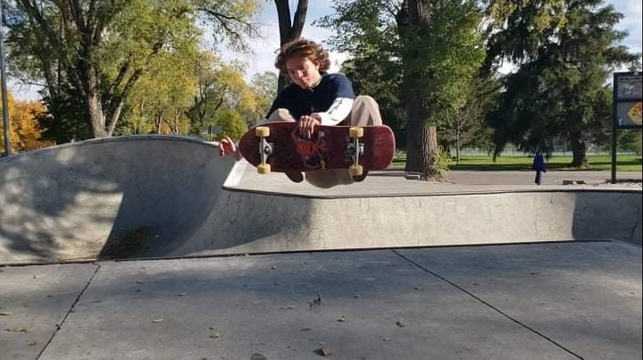
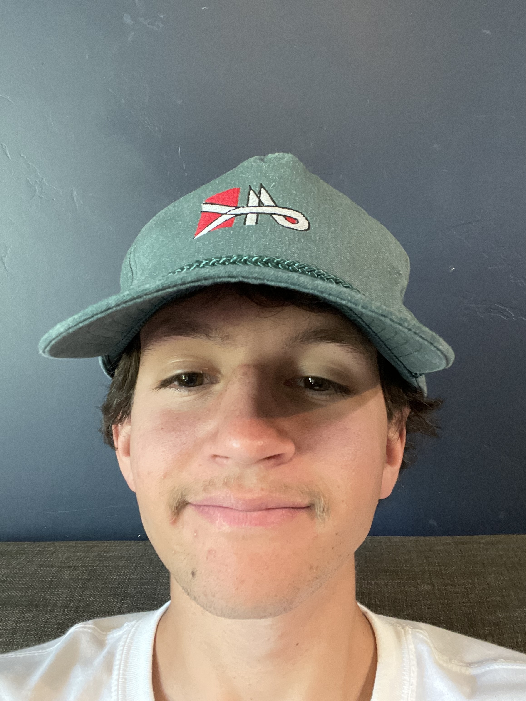

This is Preston Gagnon. He has been in Rexburg for a total of 3 and a half years. He orignally comes from Georgia where he graduated highschool, but he did not start skateboarding until he come to Idaho. Preston started skating in 2018. He skated for two and a half years before leaving on a mission to Pocatello, Idaho and later Berlin, Germany. Preston returned home in Febuary of 2022 and has been skating consistantly since being back. He loves skating ledges, rails, and stairs (mostly 4-5 stairs). "Rexburg is actually a great place for skateboarindg! The campus is on a mellow hill so hill bombs witht the homies through campus is always a good time. There are plenty of good spots on and off of BYU-I campus. There are also plenty of Skateparks around; including one in Rexburg, Rigby, St. Anthonys, and Idaho Falls." -Preston

I started skating my sophomore year of high school, about 2018, I did it because I had some friends who were into it and it seemed fun. I love skating something big with my friends and pushing them to do it with me.

Skating is a sport where your progress is completely independent. Sports like this have always interested me, like wrestling and track. So skating was just another outlet that helped me to progress in reflecting my efforts. Skating then became something much more. It has increased my pallets for music and art. As well as connecting me to some of my best friends.